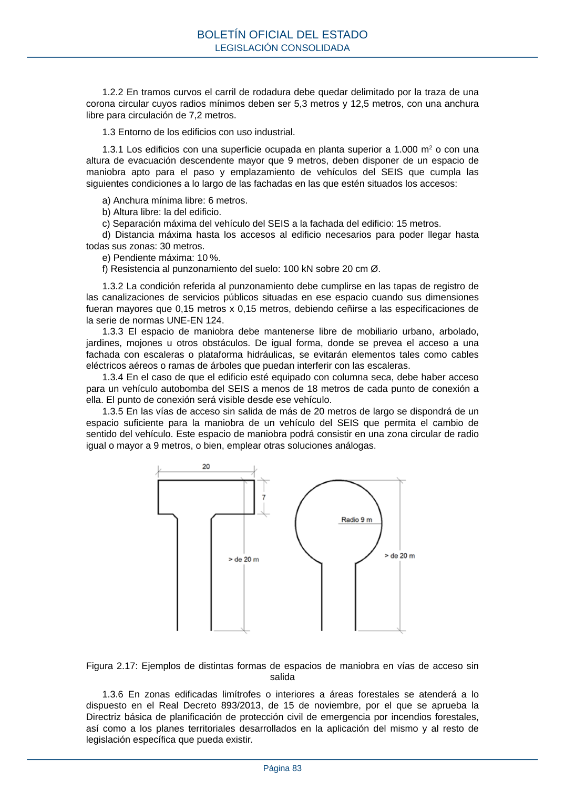

RSCIEI · edición 2025-04-10 · capa asociada
Documento RSCIEI-asociada · SHA-256 del PDF 85aa0af25d51e5b58d8975a4eefbf76d3f57a8933445cfe814ae9c4818a2e3e7
Página física 83 de 108.
Copia fiel del PDF fuente · Fuente oficial
Ficha de la disposición en la fuente oficial
Texto extraído y reorganizado: Basado en datos de la Agencia Estatal Boletín Oficial del Estado. PDF reproducido: Fuente de los datos: Agencia Estatal Boletín Oficial del Estado.
Formato: Texto de la página (Markdown)
1.2.2 En tramos curvos el carril de rodadura debe quedar delimitado por la traza de una corona circular cuyos radios mínimos deben ser 5,3 metros y 12,5 metros, con una anchura libre para circulación de 7,2 metros. 1.3 Entorno de los edificios con uso industrial. 1.3.1 Los edificios con una superficie ocupada en planta superior a 1.000 m2 o con una altura de evacuación descendente mayor que 9 metros, deben disponer de un espacio de maniobra apto para el paso y emplazamiento de vehículos del SEIS que cumpla las siguientes condiciones a lo largo de las fachadas en las que estén situados los accesos: a) Anchura mínima libre: 6 metros. b) Altura libre: la del edificio. c) Separación máxima del vehículo del SEIS a la fachada del edificio: 15 metros. d) Distancia máxima hasta los accesos al edificio necesarios para poder llegar hasta todas sus zonas: 30 metros. e) Pendiente máxima: 10 %. f) Resistencia al punzonamiento del suelo: 100 kN sobre 20 cm Ø. 1.3.2 La condición referida al punzonamiento debe cumplirse en las tapas de registro de las canalizaciones de servicios públicos situadas en ese espacio cuando sus dimensiones fueran mayores que 0,15 metros x 0,15 metros, debiendo ceñirse a las especificaciones de la serie de normas UNE-EN 124. 1.3.3 El espacio de maniobra debe mantenerse libre de mobiliario urbano, arbolado, jardines, mojones u otros obstáculos. De igual forma, donde se prevea el acceso a una fachada con escaleras o plataforma hidráulicas, se evitarán elementos tales como cables eléctricos aéreos o ramas de árboles que puedan interferir con las escaleras. 1.3.4 En el caso de que el edificio esté equipado con columna seca, debe haber acceso para un vehículo autobomba del SEIS a menos de 18 metros de cada punto de conexión a ella. El punto de conexión será visible desde ese vehículo. 1.3.5 En las vías de acceso sin salida de más de 20 metros de largo se dispondrá de un espacio suficiente para la maniobra de un vehículo del SEIS que permita el cambio de sentido del vehículo. Este espacio de maniobra podrá consistir en una zona circular de radio igual o mayor a 9 metros, o bien, emplear otras soluciones análogas. Figura 2.17: Ejemplos de distintas formas de espacios de maniobra en vías de acceso sin salida 1.3.6 En zonas edificadas limítrofes o interiores a áreas forestales se atenderá a lo dispuesto en el Real Decreto 893/2013, de 15 de noviembre, por el que se aprueba la Directriz básica de planificación de protección civil de emergencia por incendios forestales, así como a los planes territoriales desarrollados en la aplicación del mismo y al resto de legislación específica que pueda existir. BOLETÍN OFICIAL DEL ESTADO LEGISLACIÓN CONSOLIDADA Página 83
